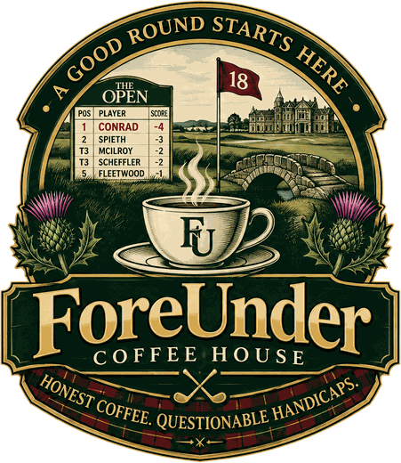

Bar Recipes
How we make every drink, and where each coffee is dialed.
13Rockbrookstop 36 g
13.5Brazilstop 36 g
10Ethiopianstop 40 g
6Malabarstop 36 g
The Machine
Baseline for every shot unless a coffee says otherwise.
- Dose
- 18 g, Creamore 18 g basket
- Yield
- 36 g (1:2), brew-by-weight on the BOOKOO
- Time
- About 32–37 s including the 8 s preinfusion. The first shot after the machine sits or after a bean switch runs long; judge on the second.
- Profile
- Each coffee has its own Foreunder profile on GaggiMate: 3 bar 8 s preinfusion, 3 s ramp to 9 bar, stop by weight
- Brew temp
- 92 °C preinfusion, 90 °C brew, for every coffee. The drop offsets the machine's climb during the shot. Offset 8 is calibration, leave it.
- Warm-up
- At least 20 minutes with the portafilter locked in the group. A cold portafilter or machine runs slow: +7 s on 10/12.
- Prep
- WDT, distribute, tamp level, puck screen
- Grinder
- DF64. Lower number is finer and slower. One step moves the shot about 2–4 s; the coach below uses each coffee's own history.
Dial-In Coach
Pulled a shot? Enter what happened and get the next move, based on your own log for that coffee.
Our Coffees
Current dial-in for each bag. The Shot Log line updates every time a pull is logged.
Drinks
my recipe is how Jamey makes it. starting point is the classic method, to be tuned.
Seasonal
Rotates with the season. Practice these before pouring them for guests.
Dessert
Steaming Milk
- Start with cold milk and a cold pitcher (12 oz Amrules). Fill below the spout notch.
- Purge the wand. Use the single-hole tip.
- Tip just under the surface to stretch (paper-tearing sound). Longer stretch for cappuccino, short for flat white, almost none for cortado.
- Sink the tip and spin the milk to 140–150 °F on the CDN thermometer. Stop before 155 °F.
- Wipe and purge the wand. Tap and swirl until glossy, then pour.
- Half & half and heavy cream steam richer and foam less. Oat milk foams loosely; keep the stretch short.
Milk Swaps
Each recipe lists what a barista would use. Swap freely; here's how each one steams.
- Whole milk
- The barista standard. Easiest glossy microfoam and latte art. 140–150 °F.
- Half & half
- Richer and denser. Stretch only 1–2 s for a flat white, 3–4 s for a cappuccino, then roll. Stop at 135–140 °F; it tastes cooked sooner. Swirl hard and pour right away.
- Oat (barista)
- Steams and pours well. Short stretch, stop under 140 °F or it turns gummy.
- Heavy cream
- Very little foam, very rich. Best as a cap (Grounds Crew) or whipped cold (con panna).
Recipes live in the menu data, and dial-ins come from the Shot Log, so this page stays current on its own.